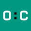

MLOPs Sardinia OpenCampus 2021
2021 · MLOps, Machine Learning, Deep Learning, Python

Artificial Intelligence for Developers | Gennaio 2024opencampus.itI taught the Applied AI in business module.
2021 · MLOps, Machine Learning, Deep Learning, Python

Artificial Intelligence for Developers | Gennaio 2024opencampus.itI taught the Applied AI in business module.